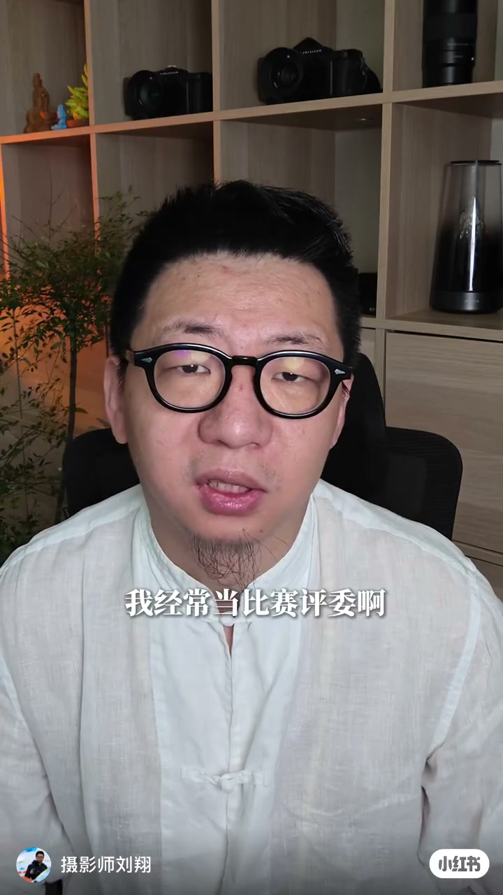
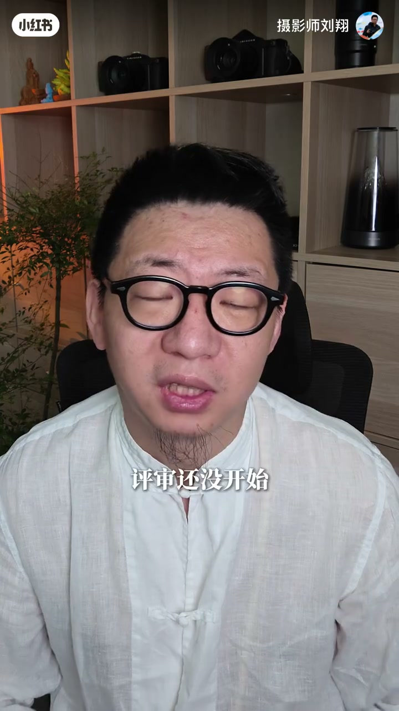
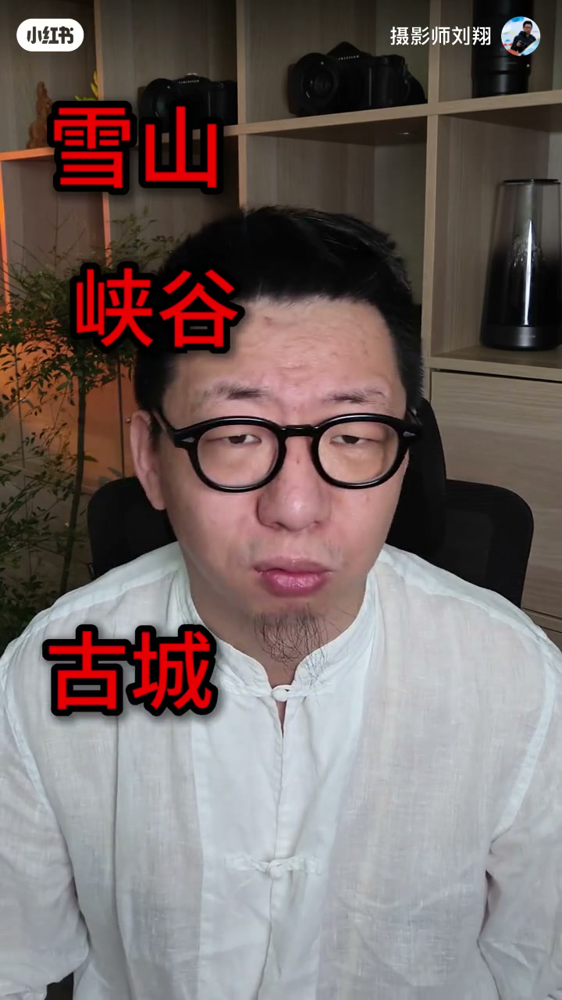
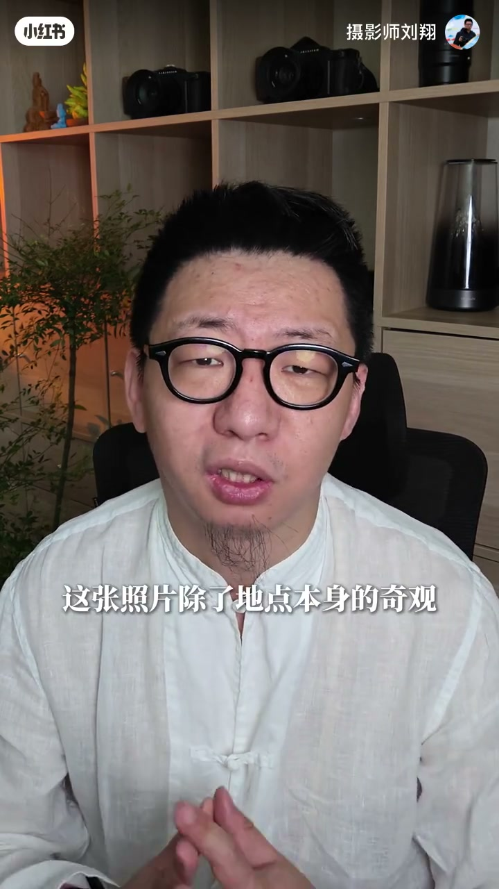
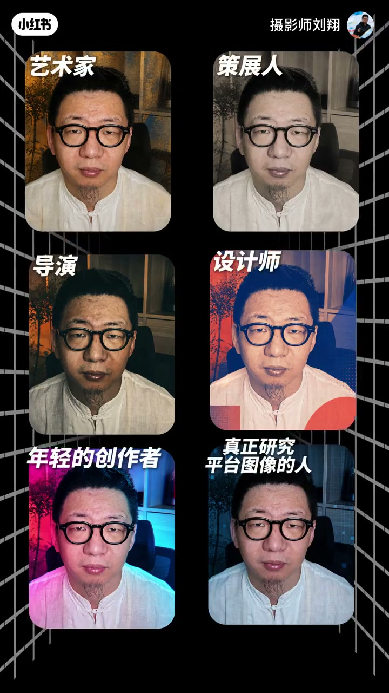
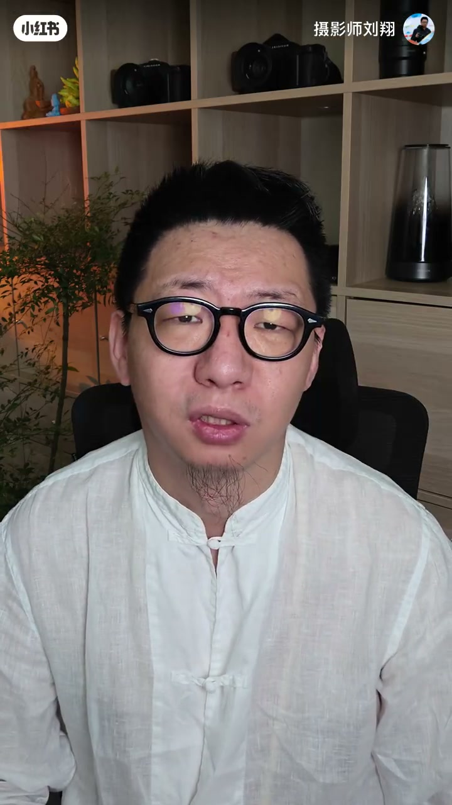

内容要点
知识结构
评委很少吵起来；一旦有人说「我反对」，桌上先出现的往往是差异，讨论却被排到后面。一团和气通常意味着评委精力太像、圈子太近、判断标准也太接近。
许多大赛评委席塞满新闻摄影、纪实摄影与协会系统前辈；比赛之间照着请、主办方互看名单、评委彼此熟悉——那张大家都见过的合影，早已替比赛证明了权威。
前辈在新闻现场、事实边界与决定性瞬间上很厉害，但不可能看完全世界的照片、记住每个网红机位。雪山峡谷古城航拍纹理本身挑不出大毛病，可机位可能已被几万人拍过；单个评委没见过很正常，整场专业比赛也识别不出就不正常了。
责任不能推给评委，也不能顺手推给投稿者。同一景区、同一山、同一观景台，光线季节与站位差不多，拍出相近机位不奇怪；别人也这么拍过，不能直接扣抄袭帽。主办方该判断：除了地点奇观，照片还带回了什么新发现。
这需要初筛、资料与验片，以及熟悉不同地区、不同图像领域的评委。前辈已把自己擅长的部分做好了，主办方却当成万能评委，再拿一排响亮名字填满海报——这就是偷懒。评委席还应有艺术家、策展人、导演、设计师、年轻创作者与真正研究平台图像的人，并纳入不同地区与文化经验。
人要轮换，意见也该真的发生冲突。平台长期只推一种内容、只请一类评委，创作者很快会被训练成他们喜欢的样子；摄影比赛同理。主办方若只想要一张权威合影，最后评出来的也只是「正常合影看得懂的摄影」。
审美十年不更新，根子往往不在「作品变差」，而在评委席同质化与主办方偷懒；要问新发现、要多元与冲突，不要只靠权威合影。
图文实录
开场：安静的评审场有点可怕
刘翔自述经常当比赛评委。国内很多评审场安静得可怕：评语不会吵起来；突然有人说一句「我反对」，桌上先出现的往往是一阵差异——「你怎么和大家不一样」——讨论反倒排在后面。他给出诊断：这种一团和气，通常意味着评委的精力太像、圈子太近，判断标准也太接近。

权威怎么造出来：名单、前辈与合影
他点名当下许多「号称权威」的大赛：评委席往往做满了新闻摄影、纪实摄影和协会系统里的前辈。一个比赛这样请，另一个比赛也照着请；主办方彼此看名单，评委彼此也熟悉。平时还没开始，那张大家都见过的合影，已经替比赛证明了权威。

网红机位：看不见的「专业」失灵
这些前辈在新闻现场、事实边界和决定性瞬间上确实很厉害；但他们不可能看完全世界的照片，也不可能记住每一个网红机位。很多地方确实很美——雪山、峡谷、古城、航拍纹理——照片本身也挑不出大毛病；可那个位置可能已经有几万人照着拍过了，构图、时间、角度都差不多。

单个评委没见过这个机位很正常；但一场号称专业的比赛也识别不出它早已被反复拍摄，那就不正常了。
责任归属：风光边界难划，看有没有新发现
责任不能推给评委，也不能顺手推给投稿者。风光摄影本来就很难划清抄袭边界：同一个景区、同一座山、同一个观景台，光线、季节和能站的位置也都差不多，最后拍出相近的机位和构图并不奇怪。仅凭别人也这么拍过，谁也不能给投稿者扣上抄袭的帽子；同一个机位被拍过，也不代表后来者没有资格获奖。

偷懒的评委席：万能前辈与该请进的人
要完成上述判断，需要初筛、资料和验片，以及熟悉不同地区、不同图像领域的评委。前辈已经把自己擅长的部分做好了；主办方却把他们当成万能的评委，再拿一排响亮的名字填满海报——「这就是偷懒」。
他强调：摄影早已进入当代艺术、商业视觉、手机影像、网络文化、AI 图像。评委席也应该有艺术家、策展人、导演、设计师、年轻的创作者，以及真正研究平台图像的人；还要让来自不同地区、不同文化经验的人都进入评审。

收束：奖励什么，几年后就会塞满什么
人要轮换，意见也应该真的发生冲突。平台长期只推一种内容、只请一种类别的评委，创作者很快就会被训练成他们喜欢的样子——摄影比赛也一样：评委席长期奖励什么，几年以后投稿箱里就会塞满什么。

最后一句很硬：主办方如果只想要一张权威的合影，最后评出来的，也只是正常合影看得懂的摄影。